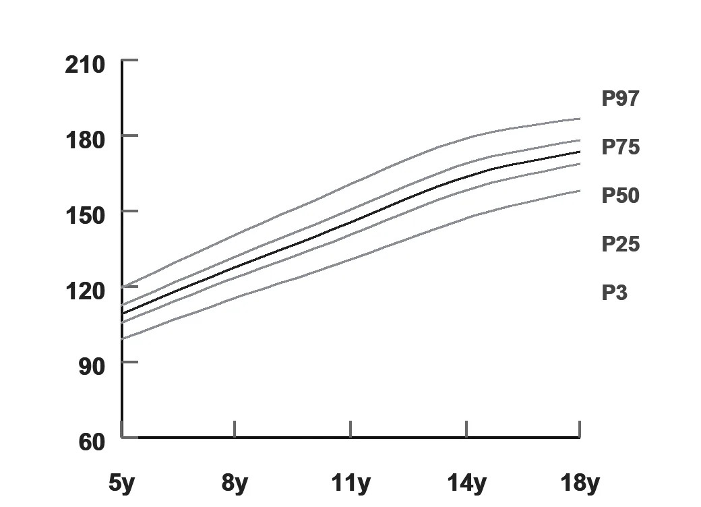

Growth Chart Percentiles and Z-Scores Explained (With Cut-offs)
Short answer: A percentile shows where a child's measurement ranks among 100 healthy children of the same age and sex; the 50th percentile is the median. A z-score shows how many standard deviations the measurement is from the median. A z-score of 0 equals the 50th percentile, −1 is about the 16th, −2 is about the 2nd (2.3rd), and +2 is about the 98th. WHO defines underweight, stunting and wasting as below −2 z-scores for weight-for-age, length/height-for-age and weight-for-length/height respectively, and severe forms as below −3.
Parents understand percentiles. Nutrition programmes and research use z-scores. A pediatrician needs both, and the conversion between them is where confusion creeps into referral letters and camp reports.

In this guide
- Percentile to z-score: the conversions that matter
- WHO cut-offs for children under 5
- Why z-scores are better for tracking
- Crossing percentile lines
- Frequently asked questions
Percentile to z-score: the conversions that matter
WHO cut-offs for children under 5
| Indicator | Moderate | Severe |
|---|---|---|
| Underweight (weight-for-age) | < −2 SD | < −3 SD |
| Stunting (length/height-for-age) | < −2 SD | < −3 SD |
| Wasting (weight-for-length/height) | < −2 SD | < −3 SD |
| Overweight (weight-for-height) | > +2 SD | Obese: > +3 SD |
For ages 5–19, WHO uses BMI-for-age: overweight above +1 SD and obesity above +2 SD. The IAP 2015 charts for Indian children 5–18 years use adult-equivalent BMI cut-offs of 23 and 27 instead; see WHO vs IAP charts.
Why z-scores are better for tracking
Percentiles bunch up at the extremes: a child moving from the 1st to the 0.1st percentile looks like a tiny change but is a full standard deviation. Z-scores are evenly spaced, so they show the true size of a change in a malnourished or very large child, and they can be averaged across a camp or school.
Crossing percentile lines
A single measurement matters less than the trend. Crossing two major percentile lines (for example from the 50th to below the 15th) warrants a closer look at feeding, illness and measurement technique. This is why plotting at every visit, not just when something seems wrong, is the useful habit.
PediaNex calculates percentiles and z-scores automatically and plots the trend at every visit.
Book a walkthroughFrequently asked questions
What z-score is the 3rd percentile?
The 3rd percentile corresponds to a z-score of about −1.88. A z-score of −2 corresponds to about the 2.3rd percentile.
What does a z-score of −2 mean on a growth chart?
It means the measurement is two standard deviations below the median for age and sex. WHO uses below −2 to define moderate underweight, stunting or wasting.
What is the difference between stunting and wasting?
Stunting is low length or height for age and reflects chronic undernutrition; wasting is low weight for length or height and reflects recent, acute weight loss.
Is the 50th percentile the ideal growth?
No. Any percentile between roughly the 3rd and 97th can be normal; what matters most is that a child follows a consistent curve over time.
See percentiles and z-scores plotted automatically.
Twenty minutes, real workflow, no script. Or start the 15-day free trial.
Book a walkthrough or chat with us on WhatsApp →